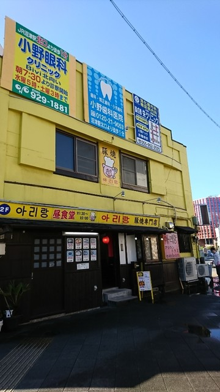
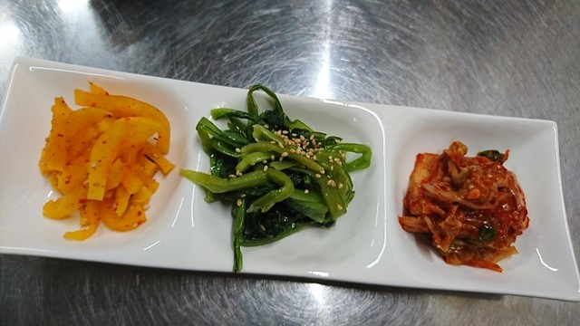
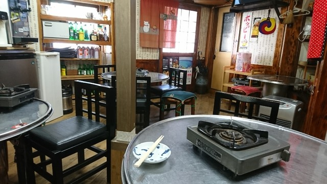

「アリラン」は、
峠の先の故郷を唄う。
「アリラン」は、韓国で最も親しまれる民謡です。
峠を越えた先の故郷を唄ったその調べのように、遠い日の食卓を思い出させる一皿をお出ししたい。そんな想いで、店名に「アリラン」をいただきました。
私たちが出すのは、飾らない家庭の味。彩り豊かな韓国のごはんは、まず目で楽しい。沼津・大手町で、その一皿を長く続けています。
特別な日のごちそうではなく、毎日食べても飽きない家庭の味。私たちが大切にしていることをご紹介します。
「アリラン」は、韓国で最も親しまれる民謡です。
峠を越えた先の故郷を唄ったその調べのように、遠い日の食卓を思い出させる一皿をお出ししたい。そんな想いで、店名に「アリラン」をいただきました。
私たちが出すのは、飾らない家庭の味。彩り豊かな韓国のごはんは、まず目で楽しい。沼津・大手町で、その一皿を長く続けています。

特別な調味ではなく、韓国の家庭で受け継がれてきた味付けを大切に。毎日食べても飽きない、素朴なおいしさを届けます。
ナムルの緑、キムチの紅、チヂミの金色。彩り豊かな韓国のごはんは、まず目で楽しい。彩りは、おいしさの合図です。
黄色い壁の食堂として、この街の日常に寄り添って。ふらりと立ち寄れる、飾らない一軒であり続けます。
横にスクロールしてご覧ください。






ディナー 17:00〜23:00／ランチ 木・金・土 11:30〜13:30／定休 水曜
お支払いは現金／PayPayに対応しています。